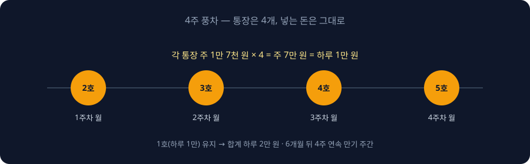
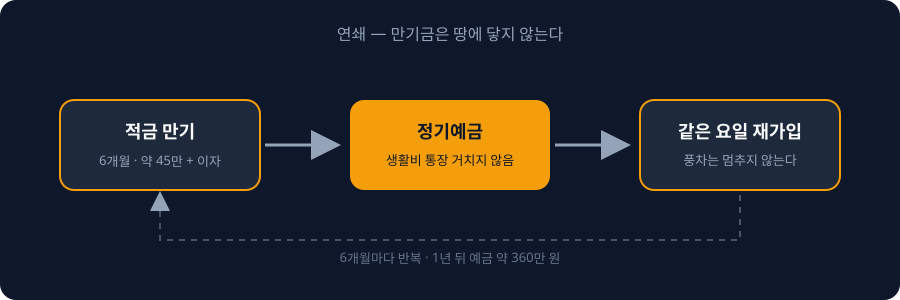

0:00훅
적금 만기일이 1년 중 가장 위험한 날입니다.
100일 동안 모은 돈이 그날 하루에 없어지는 경우를, 저는 여러 번 봤습니다.
이유는 간단합니다. 만기금이 생활비 통장으로 떨어지는 순간, 그 돈은 '모은 돈'이 아니라 '쓸 수 있는 돈'이 되기 때문입니다.
오늘은 만기가 와도 돈이 사라지지 않는 구조, 연쇄적금을 말씀드리겠습니다. 그리고 지난 영상에서 제가 한 약속 하나를 정정하겠습니다. 어떤 약속인지는 3분 뒤에 말씀드리겠습니다.
0:40100일을 넘긴 분들께
뿌요입니다.
지난 영상에서 매일 만 원, 100일에 100만 원을 말씀드렸습니다. 댓글에 '1일차'를 남기신 분들이 지금쯤 【N】일차를 지나고 있을 겁니다.
100일을 넘기셨다면, 이제 돈을 모으는 사람이 됐습니다. 그런데 여기서 대부분이 같은 실수를 합니다. 만기를 기다립니다.
만기를 기다리는 사람은 만기일에 돈을 씁니다. 100일 동안 참은 보상을 그날 하루에 받으려고 하기 때문입니다. 통장에 180만 원이 찍히고, 다음 날 노트북을 삽니다. 그리고 다시 0원에서 시작합니다.
이게 짠테크가 1년을 못 넘기는 이유입니다. 모으는 건 되는데, 모은 다음이 없습니다.
의지력 문제가 아닙니다. 100일을 버틴 사람은 의지력이 충분한 사람입니다. 문제는 만기일에 돈이 갈 곳이 정해져 있지 않았다는 것, 그것 하나입니다. 갈 곳이 없는 돈은 가장 가까운 곳으로 갑니다. 그게 생활비 통장입니다.
연쇄적금러는 '모은 다음'을 미리 정해두는 사람입니다.
2:00규칙 1 — 만기금은 땅에 닿지 않는다
연쇄적금의 첫 번째 규칙입니다.
만기금은 생활비 통장에 닿지 않습니다. 만기일에 바로 다음 통장으로 넘어갑니다. 그래서 연쇄입니다. 앞 통장의 끝이 뒤 통장의 시작이 됩니다.
구체적으로 이렇게 합니다.
2화에서 만든 1호 적금은 6개월 만기입니다. 100일에 100만 원이고, 6개월을 채우면 원금 약 180만 원에 이자가 붙습니다.
만기 한 달 전에 할 일이 하나 있습니다. 같은 은행 앱에서 6개월 정기예금을 미리 열어두고, 만기일에 만기금 전액이 그 예금으로 들어가도록 날짜를 캘린더에 적어둡니다.
대부분의 은행 앱은 만기 당일 앱 알림이 옵니다. 그 알림을 받으면 생활비 통장을 거치지 않고 바로 예금으로 옮깁니다. 걸리는 시간은 1분입니다.
이 1분이 180만 원을 지킵니다. 노트북은 1년 뒤에 사도 됩니다.
예금으로 넘기는 이유는 수익이 아닙니다. 묶기 위해서입니다. 6개월 예금은 중간에 꺼내면 이자를 거의 못 받습니다. 그 불편함이 돈을 지킵니다. 짠테크에서 접근성은 적입니다. 쉽게 꺼낼 수 있는 돈은 반드시 꺼내게 됩니다.
3:20정정 — 매주 만기는 안 됩니다
약속을 정정하겠습니다.
지난 영상 마지막에 '매주 적금을 하나씩 늘려서 만기가 매주 돌아오게 한다'고 말씀드렸습니다.
계산을 다시 해봤습니다. 6개월 적금으로 매주 만기를 만들려면 통장이 26개 필요합니다. 26개 통장에 매주 자동이체를 걸고, 26개 만기를 매주 관리해야 합니다.
안 됩니다. 저도 못 합니다. 짠테크에서 관리가 안 되는 구조는 구조가 아니라 짐입니다.
그래서 숫자를 바꿨습니다. 26개가 아니라 4개입니다. 매주 만기는 아니지만, 6개월에 한 번 '만기 주간'이 옵니다. 4주 연속으로 매주 만기가 돌아오는 기간입니다.
이게 연쇄적금의 두 번째 규칙입니다.
4:20규칙 2 — 4주 풍차: 통장은 4개, 돈은 그대로
101일째부터 시작합니다.
첫째 주 월요일, 두 번째 적금을 엽니다. 6개월 자유적금, 1호와 같은 상품이면 됩니다.
둘째 주 월요일, 세 번째 적금.
셋째 주 월요일, 네 번째.
넷째 주 월요일, 다섯 번째.
4주 뒤에 1호를 포함해 적금 통장이 5개가 됩니다.

여기서 중요한 건 넣는 돈입니다. 늘리지 않습니다.
1호 적금은 하루 만 원 그대로 갑니다. 새로 만든 4개에는 각각 주 1만 7천 원씩 자동이체를 겁니다. 4개 합치면 주 7만 원, 하루 만 원입니다.
즉, 101일째부터 하루 2만 원을 모읍니다. 1호에 만 원, 풍차 4개에 만 원. 100일 동안 하루 만 원 빼는 곳을 찾아낸 분들은, 이제 두 번째 만 원을 찾을 차례입니다. 지난 영상의 3일 기록법을 한 번 더 돌리면 됩니다.
두 번째 만 원이 당장 안 나오는 분도 있을 겁니다. 그러면 풍차 4개에 주 1만 원씩만 거세요. 하루 1만 5천 원 구조입니다. 금액보다 통장 4개와 월요일 자동이체, 이 틀이 먼저입니다. 금액은 나중에 올리면 됩니다.
왜 통장을 4개로 쪼개느냐. 두 가지 이유입니다.
하나, 급한 일이 생겨도 하나만 깹니다. 통장이 하나면 전부 깨야 합니다. 4개면 4분의 1만 깨고 나머지 3개는 약정 이자를 그대로 받습니다.
둘, 6개월 뒤에 4주 연속 만기가 옵니다. 매주 월요일마다 통장 하나가 끝나고, 그 돈이 다음 통장으로 넘어갑니다. 4주 동안 매주 '모은 돈이 움직이는 경험'을 합니다. 이 경험이 1년을 버티게 합니다.
6:30규칙 3 — 만기 주간엔 같은 요일에 다시 연다
6개월 뒤, 만기 주간입니다.
첫째 주 월요일에 두 번째 적금이 만기됩니다. 주 1만 7천 원씩 26주, 원금 약 45만 원에 이자가 붙습니다. 이 돈은 규칙 1대로 예금으로 넘깁니다. 그리고 같은 날, 같은 조건으로 새 적금을 엽니다.
둘째 주, 셋째 주, 넷째 주도 같습니다. 만기, 예금으로 이동, 재가입. 세 동작이 한 세트입니다.

이렇게 하면 풍차는 멈추지 않습니다. 6개월마다 만기 주간이 돌아오고, 그때마다 예금 통장에 약 180만 원이 쌓입니다. 1호 적금 만기금까지 합치면, 시작하고 1년 뒤 예금 통장에는 약 360만 원이 있습니다.
이자는 또 솔직하게 말씀드리면, 몇만 원입니다. 그런데 이 360만 원은 한 번도 생활비 통장에 닿은 적이 없는 돈입니다. 그래서 남아 있습니다.
1화에서 말씀드린 1년 1천만 원 로드맵을 기억하실 겁니다. 하루 2만 원 구조가 360만 원을 만들고, 다음 영상에서 다룰 고정비 정리가 나머지를 만듭니다. 연쇄적금은 그 로드맵의 첫 번째 기둥입니다.
8:00풍차가 무너지는 세 지점
풍차돌리기는 오래된 방법입니다. 그리고 대부분 6개월 안에 무너집니다. 무너지는 지점은 세 군데입니다.
첫째, 납입액 계산 실수. 흔히 알려진 월 단위 풍차는 매달 통장을 하나씩 늘립니다. 월 10만 원으로 시작하면 12개월째에는 월 120만 원을 넣어야 합니다. 열두 배입니다. 대부분 여기서 포기합니다. 오늘 구조는 넣는 돈을 늘리지 않습니다. 하루 2만 원에서 끝입니다. 통장 수만 늘어납니다.
둘째, 중도해지. 비상금 없이 시작하면 반드시 깹니다. 깨면 약정 이자 대신 중도해지 이자를 받는데, 거의 0에 가깝습니다. 그래서 1호 적금 만기금 일부를 비상금으로 떼어둘지, 전부 예금으로 넘길지는 본인 상황에 맞게 정하세요. 생활비 한 달치는 따로 있어야 합니다.
셋째, 금리를 안 봅니다. 재가입할 때마다 금리는 바뀝니다. 6개월마다 재가입하는 날, 은행 앱에서 숫자를 한 번 확인하세요. 그리고 지난 영상에서 첫 적금으로는 거른 카카오뱅크 26주적금, 지금 단계에서는 써도 됩니다. 매주 납입액이 늘어나는 구조라 첫 적금에는 부담이었지만, 100일을 넘긴 분들에게는 풍차 통장 하나로 괜찮습니다. 1천 원으로 시작하면 26주 뒤 총 35만 1천 원이 됩니다. 풍차 통장 하나의 원금과 비슷합니다.
9:00실행 과제 · 4화 예고 · 구독
오늘 과제는 두 개입니다.
하나, 1호 적금 만기일을 지금 캘린더에 적으세요. 그리고 만기 한 달 전 날짜에 '예금 열기'라고 하나 더 적으세요.
둘, 다음 주 월요일에 두 번째 적금을 여세요. 주 1만 7천 원 자동이체. 열고 나서 댓글에 '연쇄 2호'라고 남겨주세요. 4주 뒤 '연쇄 5호'까지 온 분들을 제가 정리하겠습니다.
다음 영상은 고정비입니다.
1화에서 말씀드린 세 군데 구멍, 통신비·보험료·구독료를 제가 실제로 뜯어고친 순서 그대로 보여드리겠습니다. 하루 2만 원 밖에서 나오는 돈입니다.
만기가 와도 사라지지 않는 돈. 이 구조를 같이 만들 분들은 구독해 두시면 됩니다.
뿌요였습니다.